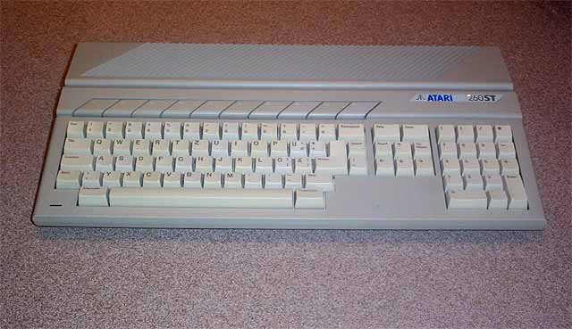
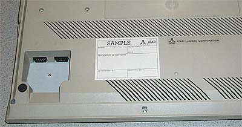

The Atari 260STfm
(aka Atari 260STD)

The Atari 260STfm was originally introduced in the United States but was
instead sold in the European market in limited numbers. The
smaller amount of RAM meant a lower price for consumers in European countries
on a tight budget. 256K or RAM, built in 720K floppy
drive (f designator) and a built in RF Modulator for us on standard Television
sets (m designator) allowed further acceptance for those who could not
purchase a monitor but instead opted to use an already existing television
set in the home.

The other added feature was an internal
power supply so the large power "brick" from the
original 520ST computer was no longer
needed, the system was completely self contained.
The 260STfm was originally going to be
called the Atari 260STD, however a quick
review of the acronym revealed that STD
would not be a wise choice.

The unit was the prototype sample shown
at several Atari shows.